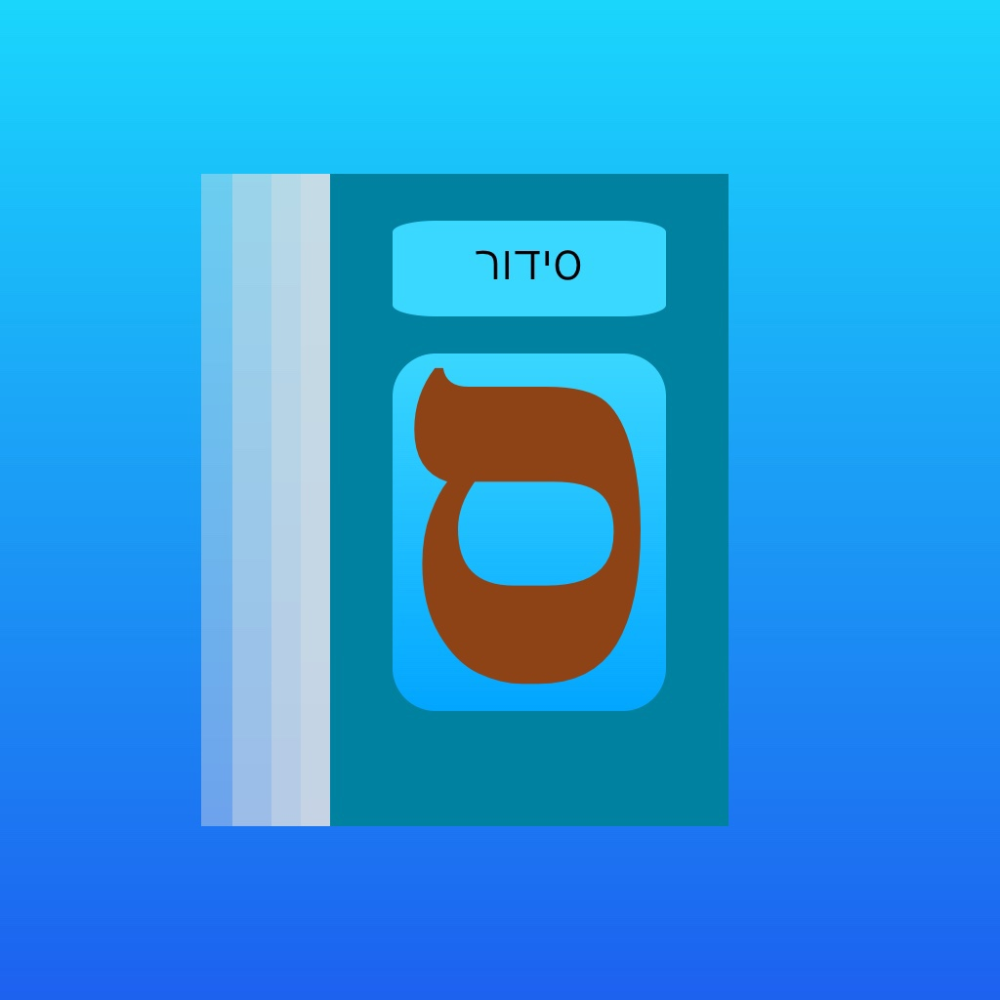

Projects
Splitter
Splitter
The Speedrunning Timer for macOS
Siddur + Tehillim Anywhere

Siddur + Tehillim Anywhere
The Jewish prayer book, on your iPhone or iPad.Includes Nusach Ashkenaz, Sefard, and Edot HaMizrach
Zmanim
Zmanim
Keep track of Zmanim on iPhone and iPad